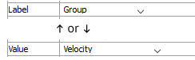

Block
Description
Show block and zone information by label or value. The first few attributes of this plot item are contingent on the first attribute (Color By).
Attributes
Color By

Set either a “label” or a “contour” to be colored on the plot item.
Label/Value
Specify which label or value (as determined by the previous setting) to display in the plot item. The options for both are shown on the following table. Some options will require additional, dynamically-provided attributes in order to complete the selection; these are indicated with notations on the table.
Table 1: Selection Options for Label/Value Label Valueᴸ Value (cont.) Block Extraᵉ Accelerationᶜ Rotation Block Groupˢ Corner Extraᵉ Strain Incrementʸ Fixity Displacementᶜ Strain Rateʸ Fragment Effective Stressᶻ Saturation Fragment ID Extraᶠ Stressᶻ ID Factor of Safety Strength Ratioᵐ Material GP Extraᶠ Temperature Model GP Pore Pressure Thermal Propertyᵖᵐ Propertyᵖ Hoek Brown Failure Target-Force Ratio State Mohr Coulomb Failure Velocityᶜ Uniform Out of Balance Force Zone Extraᵉ Pore Pressure Zone Groupsˢ Propertyᵖᵐ
Key: ᴸ*All* values provide a “Log” attribute ᶜA “Component” attribute follows ᵉAn “Extra” attribute follows ᶠAn “Extra” and “Type” attribute follow ᵐA “Method” attribute follows ᵖA “Property” attribute follows ˢA “Slot” attribute follows ʷA “Source” attribute follows ʸA “Quantity” and “Method” attribute follow ᶻA “Quantity”, “Stress”, and “Method” attribute follow
Color-List/Contour
The attribute appearing in this position is either a Color-List or a Contour, depending on the “Color By” selection. Refer to the standard color-list control description and the standard contour control description for details.
Block Outline

Select to display outlines on blocks.
| Was this helpful? ... | UDEC © 2018, Itasca | Updated: Mar 15, 2024 |